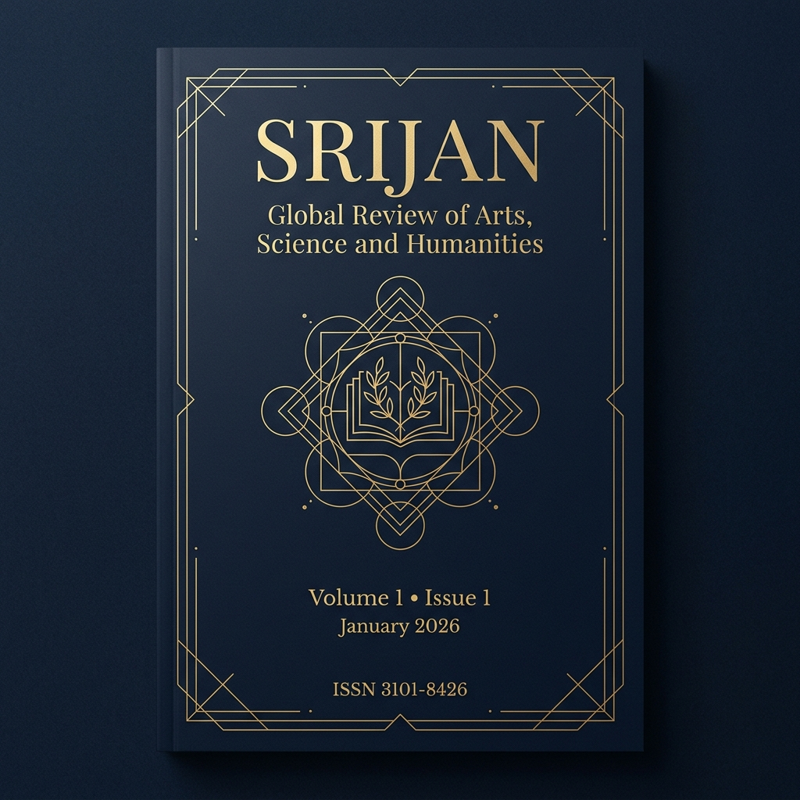

SRIJAN: Global Review of Arts, Science & Humanities
An international peer-reviewed academic forum dedicated to cross-disciplinary scholarship, theoretical innovation, and empirical discovery across humanistic and scientific frontiers.

About SRIJAN Journal
An institutional commitment to advancing rigorous scholarly dialogue across international boundaries.
Fostering Excellence in Cross-Disciplinary Discourse
SRIJAN: Global Review of Arts, Science & Humanities is a premier international, double-blind peer-reviewed open access journal established to bridge the traditional divide between humanistic inquiry and empirical sciences.
Our mandate is to publish cutting-edge theoretical investigations, rigorous qualitative and quantitative studies, and high-impact critical reviews that address contemporary intellectual and societal challenges. All publications adhere to the strict ethical guidelines laid out by COPE (Committee on Publication Ethics).
Aim & Scope
SRIJAN welcomes foundational and applied research across eight principal intellectual domains.
Literature
Comparative literature, post-colonial theory, literary criticism, digital humanities, and contemporary poetics.
Linguistics
Applied linguistics, sociolinguistics, cognitive semantics, computational grammar, and language preservation.
Philosophy
Epistemology, moral philosophy, bioethics, philosophy of science, phenomenology, and eastern philosophical systems.
Sociology
Social stratification, urbanization, demographic dynamics, cultural anthropology, and technology studies.
Psychology
Cognitive behavioral sciences, neuro-psychology, organizational behavior, developmental psychology, and clinical studies.
Education
Pedagogical innovation, educational psychology, ed-tech evaluation, curriculum theory, and inclusive education policy.
Theatre & Performance
Dramaturgy, ethnomusicology, performative arts, visual aesthetics, cinematic studies, and history of performative traditions.
Interdisciplinary Research
Interface of AI and ethics, environmental humanities, medical anthropology, science & technology studies (STS).
Have research falling within or at the intersection of these fields?
We encourage authors to consult our comprehensive editorial policies before formatting their manuscript.
Editorial Board
Our esteemed editorial leadership ensures stringent academic review and upholds international publication standards.
Executive Editor-in-Chief & Advisory Oversight
Dr. (HC) Manas Moulic
Assistant Professor in English Department of English Ramakrishna Mission Vivekananda Centenary College, Rahara, Kolkata 700118 West Bengal, IndiaProf. Mangal Chandra Moulic
Principal (Retired) Department of English Dr. B. R. Ambedkar College, Betai, Nadia 741163 West Bengal, IndiaDr. Durga Ghoshal
Associate Professor of English (Retired) Department of English Government General Degree College West Bengal, IndiaAssociate Editors
Md. Mojibur Rahman
Associate Professor Department of Humanities and Social Sciences Indian Institute of Technology (IIT ISM), Dhanbad 826004 Jharkhand, IndiaDr. Koutilya Bhattacharjee
Assistant Professor in Zoology Pharmacology and Disease Biology Lab, PG Dept of Zoology Ramakrishna Mission Vivekananda Centenary College, Rahara 700118 West Bengal, IndiaInternational Advisory Members
Distinguished global scholars providing governance, strategic foresight, and international peer review oversight.
Evdokimos Tsolakidis
Founder and Artistic Director Theater of Changes Theater of Changes (since 1998)Peter Verboven
Head Ethos Universitas Framework PCU CommitteeProf. Dr. Marcus Vance
Professor of Cognitive Behavioral Sciences Department of Psychology & Brain Sciences Johns Hopkins University, 3400 N. Charles St, Baltimore MD 21218 United StatesAssistant Editors & Review Panel
Kanta Rao D
Assistant Professor (English) Gandhi Institute of Engineering and Technology University (GIET), Gunupur 765022, OdishaSharmistha Basu
Assistant Professor (English) Narula Institute of Technology (NIT), 81 Nilgunj Road, Agarpara, Kolkata 700109Shantanu Chakravarty
Assistant Professor (English) Guru Nanak Institute of Technology (GNIT), 157/F Nilgunj Road, Panihati, Kolkata 700114Dr. Anannya Gain
Assistant Professor (English) Haringhata Mahavidyalaya, Subarnapur, Nadia 741249, West BengalManisha Moulic
Research Scholar, Department of English University of Kalyani, Kalyani 741235, West BengalSayantan Ghosh
Research Scholar, Department of Comparative Literature Jadavpur University, Kolkata 700032, West BengalAre you an established academician seeking editorial involvement?
SRIJAN is continually seeking qualified peer reviewers and editorial board candidates across our specialized domains.
Journal Archives
Explore current and upcoming catalogued volumes of SRIJAN.
Volume 2 (Scheduled)
- Issue 1 (January 2027) Planned
- Issue 2 (July 2027) Planned
Author Guidelines
Essential instructions for preparing and submitting your manuscript to SRIJAN.
Manuscript Preparation Checklist
Before submitting your manuscript, please ensure that your submission fulfills all the following mandatory criteria:
-
Originality: The manuscript must be original work, not previously published, and not currently under consideration by any other journal.
-
Anonymization: To facilitate double-blind review, the main manuscript file must NOT contain author names, affiliations, or identifying acknowledgments. Include these only on a separate Title Page.
-
Abstract & Keywords: Include a concise abstract (150-250 words) outlining background, methodology, results, and conclusions, followed by 5-7 standardized keywords.
-
File Format: Editable Microsoft Word (.doc / .docx) or LaTeX (.tex) format.
Formatting & Style Standards
SRIJAN adheres to the latest edition of the APA Style Manual (7th Edition) for Social Sciences/Education and MLA format for Literature/Arts submissions.
Typography
12-point Times New Roman or Garamond, 1.5 line spacing throughout, with 1-inch margins on all sides.
References
Complete bibliographical references must be appended at the end. Include active DOIs where available.
Figures & Tables
All high-resolution figures (minimum 300 DPI) and tables must be embedded directly within the text at the appropriate point, with descriptive captions.
Zero Article Processing Charges (APC)
SRIJAN is fully committed to Diamond Open Access.
We do not charge any submission fees, editorial processing charges, or publication fees from authors. All operational expenses and digital preservation costs are completely subsidized by the parent academic body, SRIJANTIRTHA.
Peer Review Policy
A transparent overview of our rigorous double-blind evaluation workflow.
Initial Submission
Manuscript received via secure online portal and assigned a unique tracking ID.
Editorial Screening
Checked for scope alignment, formatting compliance, and iThenticate similarity (< 15%).
Double-Blind Review
Dispatched to 2+ independent international expert referees. Author & Reviewer identities remain strictly anonymous.
Editorial Decision
Synthesis of reviewer evaluations: Accept, Minor Revisions, Major Revisions, or Reject.
Publication & Indexing
Final typesetting, DOI assignment, open-access distribution, and permanent digital archiving.
Commitment to Referees and Scientific Objectivity
Our review process is strictly governed by COPE Ethical Guidelines. Referees evaluate papers purely on theoretical rigor, methodological soundness, and academic contribution. Conflicts of interest are actively screened.
Publication Ethics & Malpractice Statement
SRIJAN maintains zero tolerance for academic misconduct, data fabrication, or ethical breaches.
Originality & Plagiarism Policy
Every submitted manuscript undergoes compulsory similarity analysis using advanced text-matching software (iThenticate / Turnitin). Any manuscript exhibiting uncredited verbatim reproduction or similarity scores exceeding 15% is summarily rejected.
Double-Blind Evaluation
To prevent implicit bias based on institutional prestige, nationality, or gender, all review procedures maintain double-blind anonymity. Reviewers are strictly prohibited from utilizing submitted data prior to publication.
Copyright & Licensing
Authors retain full copyright of their published work under the Creative Commons Attribution (CC BY 4.0) License. Users are free to share and adapt the material provided appropriate attribution is accorded to the original SRIJAN publication.
Open Access Mandate
In accordance with the Budapest Open Access Initiative (BOAI), all articles published in SRIJAN are immediately and freely accessible online without registration or subscription barriers.
Indexing & Accreditation Roadmap
To ensure maximum international reach and citation impact, SRIJAN is pursuing comprehensive database inclusion.
Google Scholar
Metadata harvesting and automated indexing configuration for immediate author profile linkage upon first issue release.
Crossref DOI
Official registration for digital object identifier (DOI) prefix assignment to guarantee persistent reference linking.
DOAJ (Directory of Open Access Journals)
Rigorous editorial compliance mapping to meet DOAJ Seal standards for open access transparency.
ResearchGate
Official institutional publication repository link to maximize paper accessibility across global researcher networks.
Contact Editorial Office
For submission queries, indexing verification, or institutional partnerships.
Editorial Headquarters
Main Office: Betai, Nadia 741163, West Bengal, India
City Administrative Office
Flat No. B1, B2/236, Kalyani 741235, West Bengal, India
Official Inquiries & Phone
+91 90623 85173 / +91 89105 54624 / +91 86176 28810
Official E-Mails
Submissions:
srijan.globalreview@gmail.com
Publisher: contact@srijantirtha.in
Publisher Registration
SRIJANTIRTHA Reg No: IV-1901-00880/2025 | PAN: ABMTS9991H